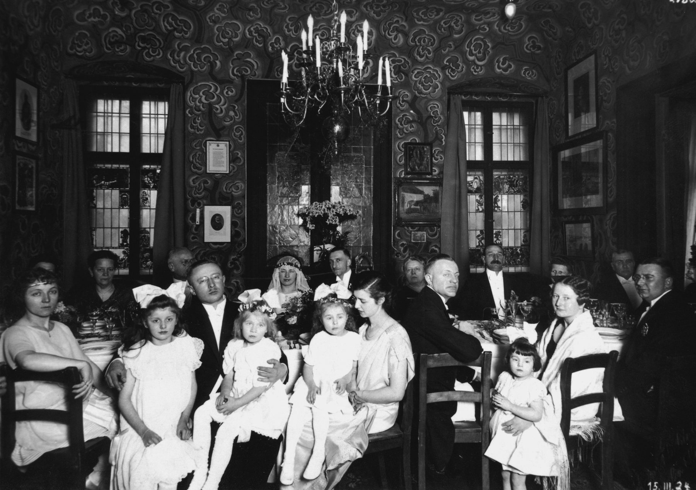
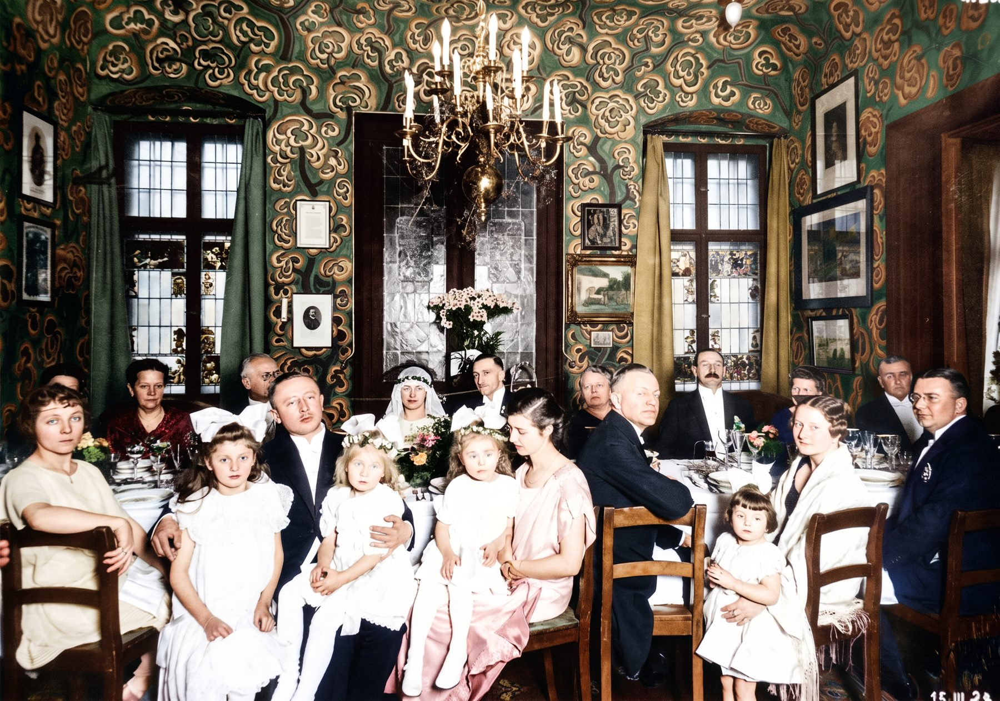
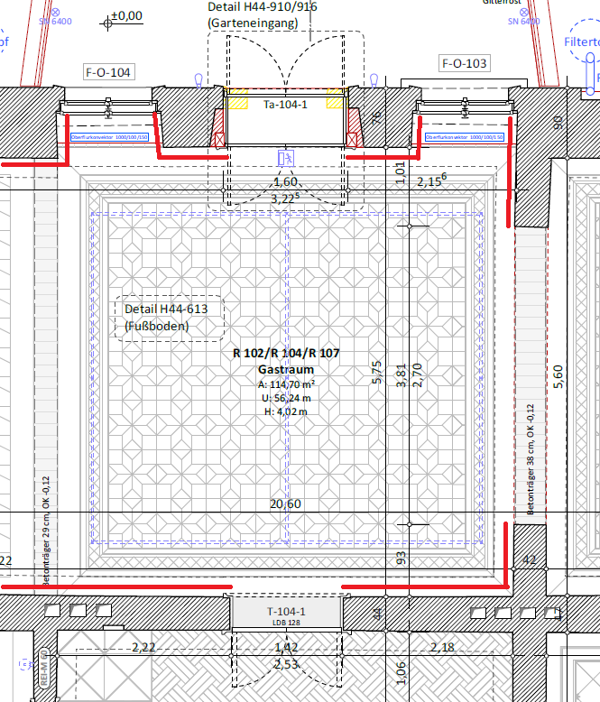
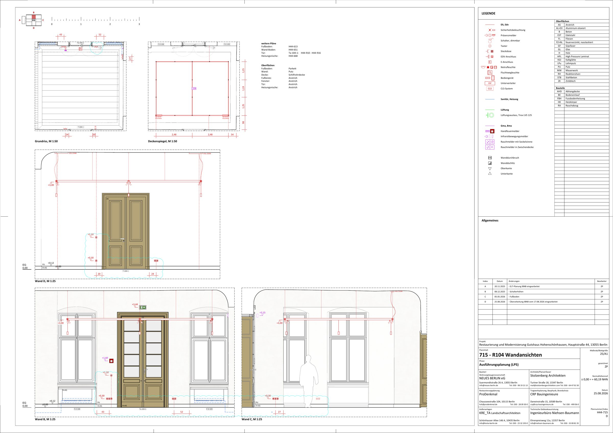
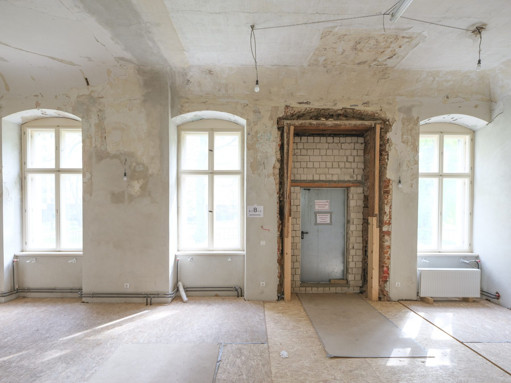
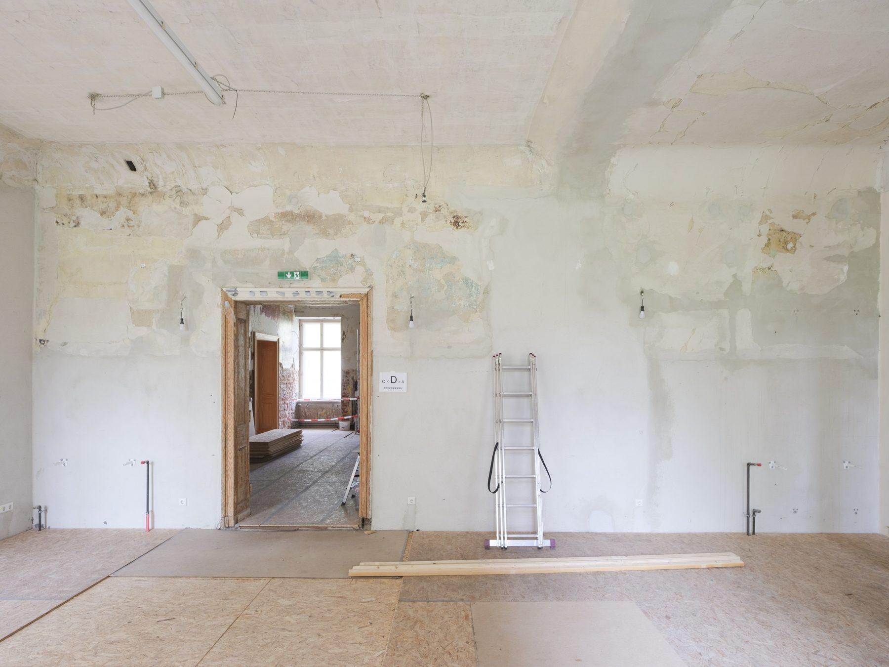
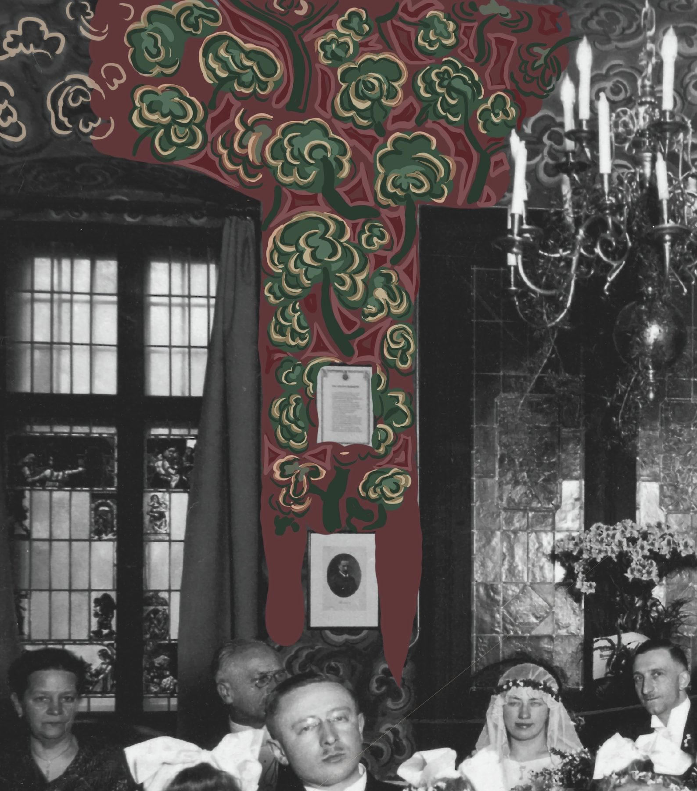
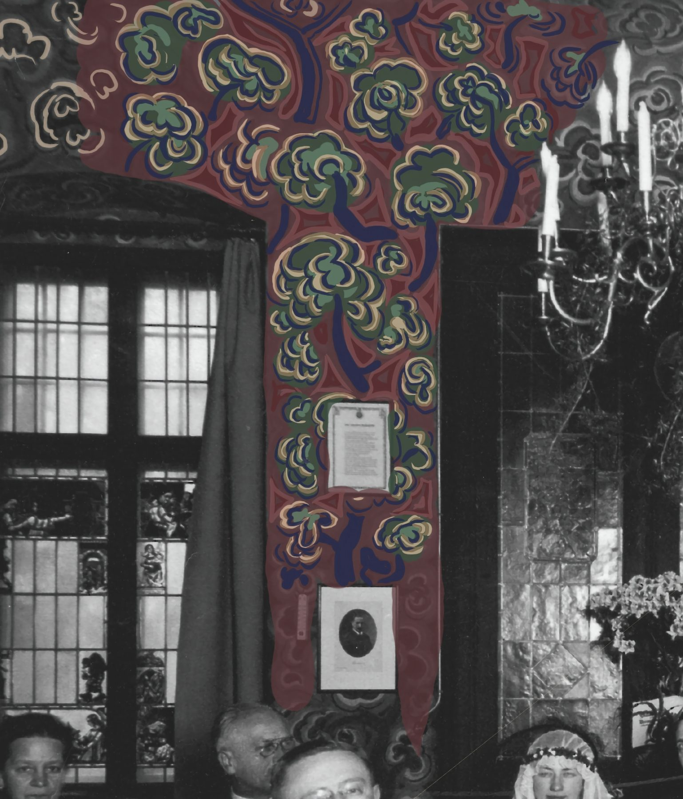
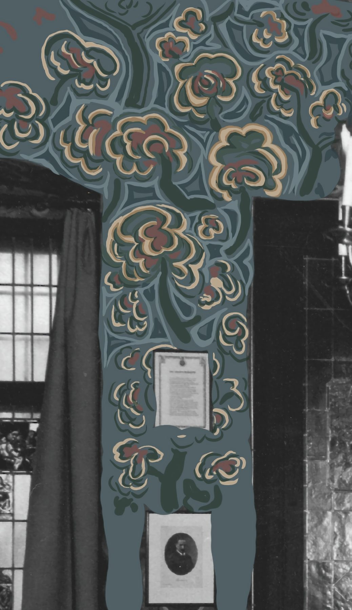

Oberflächen laut Plan
| Wand | Putz |
| Decke | Schilfrohrdecke |
| Fußboden | Parkett (Detail H44-613) |
| Fenster, Türen, Fußleiste | Anstrich |

1924 feierte eine Hochzeitsgesellschaft in einem Raum, dessen Wände und Gewölbe ganz von gemalten Bäumen und Wolkenblüten bedeckt waren. Heute sind davon nur Fragmente unter abblätternden Farbschichten übrig.
Diese Seite zeigt Schritt für Schritt, wie aus Archivfoto, Befund und Ausführungsplanung ein neues, maßgenaues Wandbild für R104 entstanden ist.
Das Hochzeitsfoto ist die wichtigste Quelle für das ursprüngliche Aussehen. Man sieht Stämme, die von unten aufsteigen, sich verzweigen und in große, mehrfach konturierte Wolkenblüten übergehen. Das Motiv läuft ohne Unterbrechung über Wände, Fensterbögen und Gewölbe.
Die Aufnahme zeigt auch den Maßstab: Die Blüten sind etwa kopfgroß, und zwischen den Fenstern steht jeweils ein Baum. Diese Rhythmik wurde für den Neuentwurf übernommen.

Das Gutshaus wird restauriert und modernisiert. Bauherrin ist die NEUES BERLIN eG, geplant wird von Stolzenberg Architekten, die Restaurierungsplanung liegt bei ProDenkmal. Raum 104 ist Teil des Gastraums R102/R104/R107.
Der Grundriss markiert rot die Wandabschnitte, die das Wandbild tragen: Wand B mit Gartentür Ta-104-1 und den Fenstern F-O-104 und F-O-103, Wand C mit dem Durchbruch zu R107, Wand D mit der Tür T-104-1.

| Wand | Putz |
| Decke | Schilfrohrdecke |
| Fußboden | Parkett (Detail H44-613) |
| Fenster, Türen, Fußleiste | Anstrich |

Die Fotos der Wände B, C und D zeigen den Raum im Umbau. Die Böden sind mit OSB ausgelegt, der Durchbruch zu R107 ist mit einem Stahlträger abgefangen. Unter den abgeplatzten Putz- und Farbschichten sind an Wand D und im Gewölbe noch Reste der alten Malerei zu erkennen.



Freigelegte Blütenfragmente wurden mit Maßband fotografiert. Daraus ergeben sich die echten Größen und der Aufbau der Pinselfassung: kräftige C-Bögen in Rostrot, dunkelgrüne Innenkonturen, Ultramarin in den Blütenblättern, alles auf hellem Kalkgrund.


Um die Wirkung im Raum zu beurteilen, wurde das Motiv in Collagen direkt auf das Hochzeitsfoto gelegt. So lassen sich Farbstimmungen im originalen Umfeld aus Kronleuchter, Bleiglas und Bilderrahmen vergleichen.




Aus allen Quellen entstand ein durchgehendes Wandbild für R104. Zehn Bäume wachsen aus den Pfeilern zwischen den Öffnungen von Wand B, C und D. Ihre Kronen laufen über die Vouten in die Decke und schließen dort als Himmel aus Blüten und Blättern.
Alle Maße stammen aus den Vektordaten von H44-715, Index D. Die Dateien liegen im Maßstab 1:1 in Millimetern vor und sind druckfertig. Die Abbildungen unten stammen aus dem Übersichtsplan HSH_R104_Wandbild_Plan_A1.pdf.
Ausschnitt Wand B, Achse A bis Pfeiler neben Ta-104-1, ab +1,30 m bis Deckenkante, M 1:20. Alle Farbwelten nutzen dieselbe Vektorgeometrie. Im SVG ist jede Farbe eine eigene Klasse.